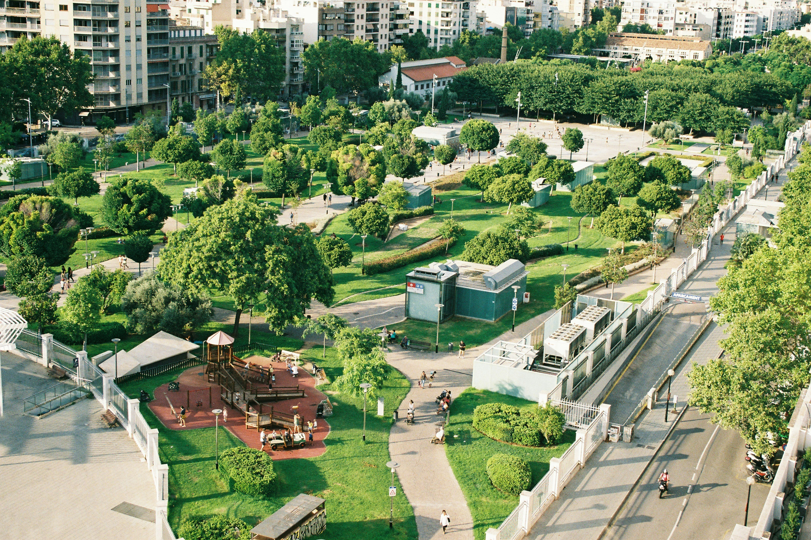
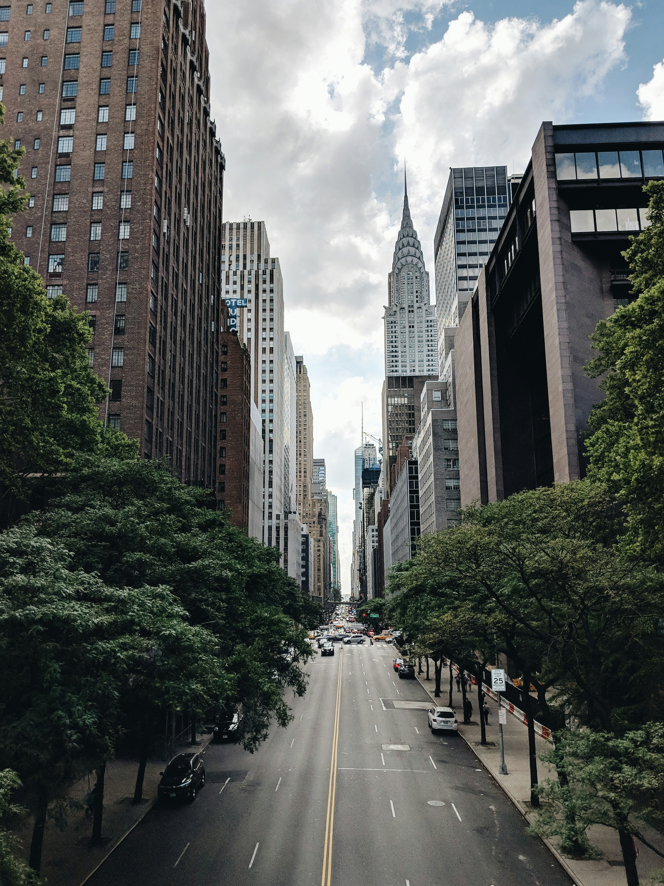
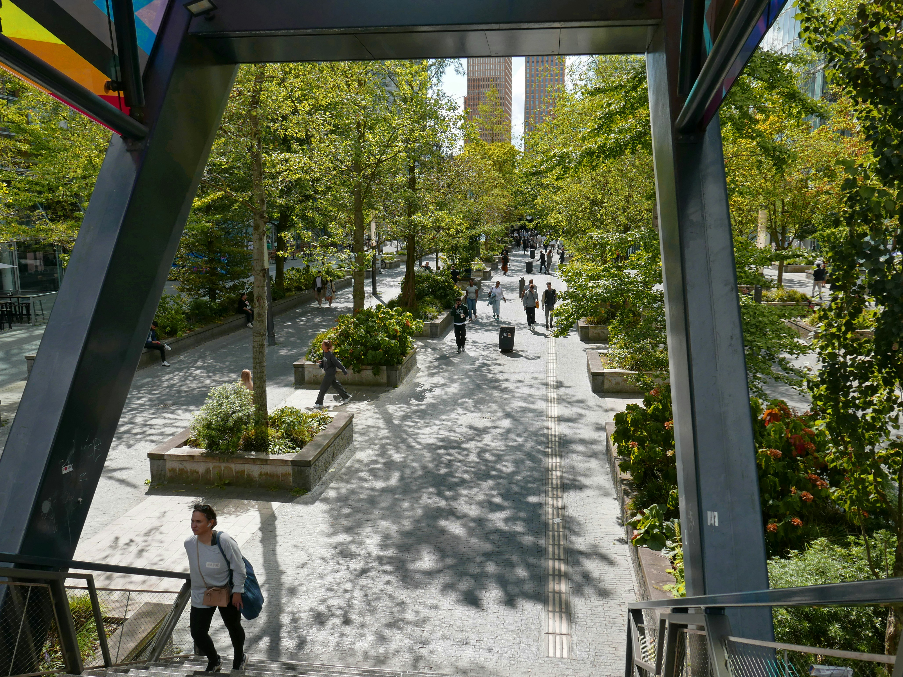
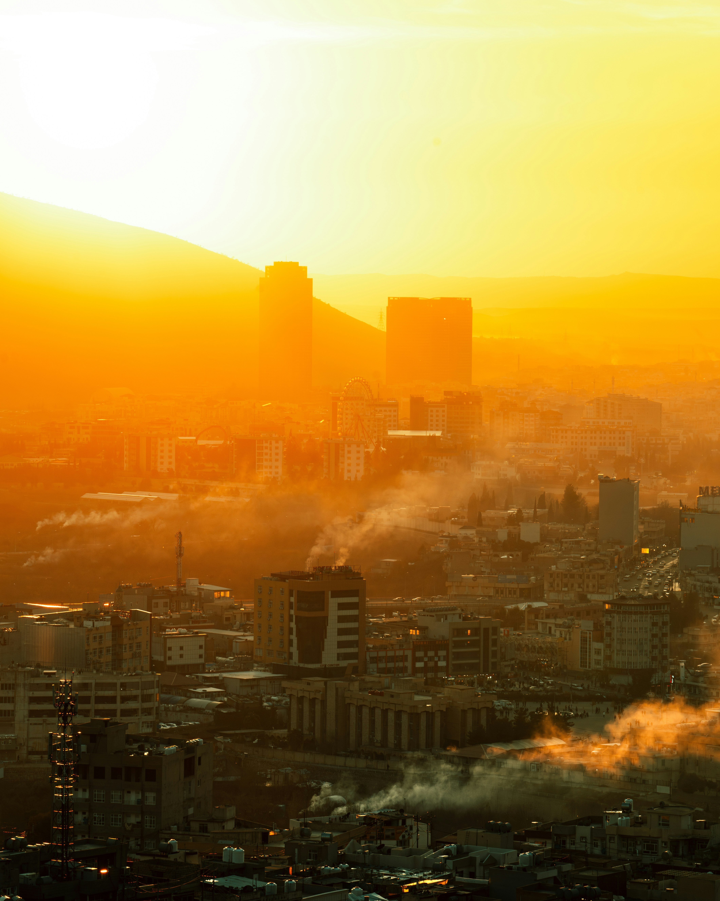
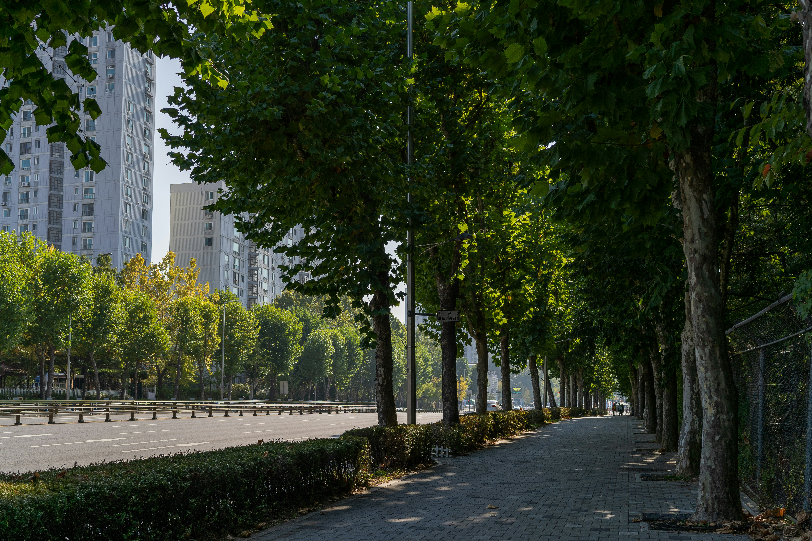
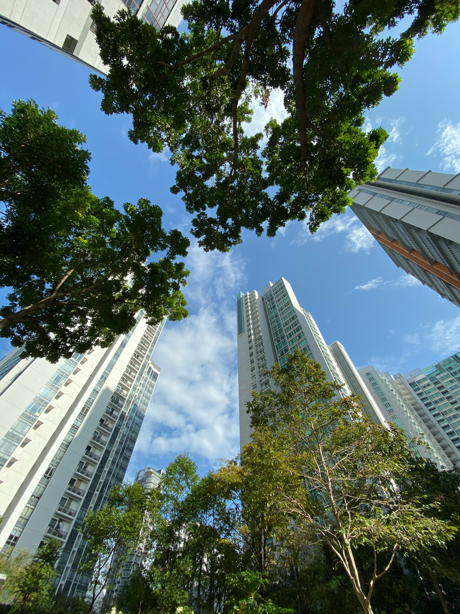
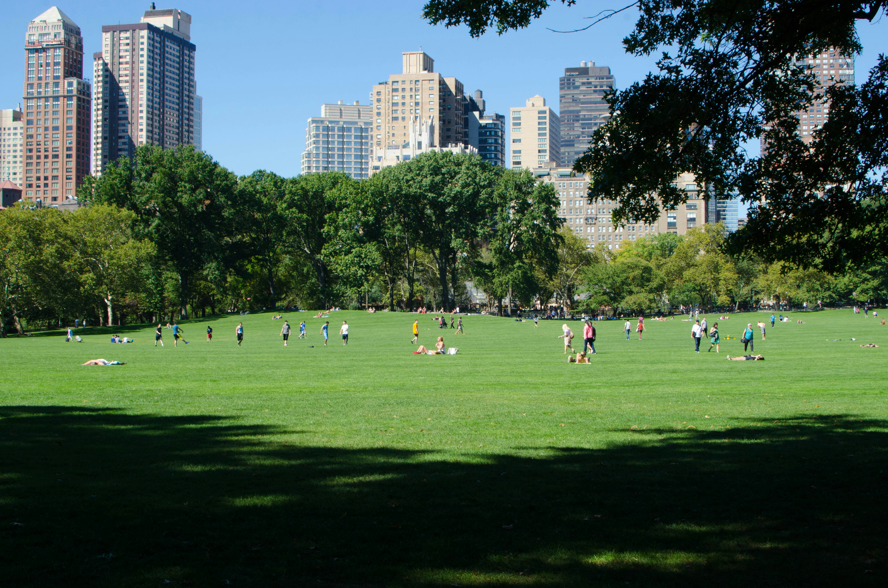

Cleaner Air
Tree cover can help reduce pollutants and support healthier breathing environments, especially in dense, traffic-heavy urban areas.
Urban Trees • Public Health • Community Action
Urban Shade Initiative is a collaborative public health and environmental initiative exploring how urban tree loss affects heat, air quality, biodiversity, and neighborhood well-being—and what communities can do about it.

We believe urban forests are not just environmental assets—they are public health infrastructure that shape heat exposure, respiratory well-being, biodiversity, and quality of life.
Why Urban Trees Matter
Urban green spaces do more than beautify neighborhoods. They cool overheated streets, improve air quality, support local ecosystems, and create healthier spaces for people to live, walk, work, and gather.
Tree cover can help reduce pollutants and support healthier breathing environments, especially in dense, traffic-heavy urban areas.
Shade and evapotranspiration help reduce surface and neighborhood heat, making daily life safer during hot seasons.
Urban trees support birds, pollinators, and habitat corridors that keep local biodiversity from disappearing.
Access to greener neighborhoods can support physical activity, mental restoration, and stronger community well-being.
Visual Comparison
As green cover declines, urban neighborhoods often experience hotter walkways, poorer thermal comfort, reduced ecological presence, and weaker buffers against environmental stress.
This section can later be upgraded into an interactive before-and-after slider, but the layout below already gives a strong visual storytelling foundation for GitHub Pages.


Impact Snapshot
These counters can be animated later with JavaScript. For now, they provide a clean placeholder structure for real project metrics.
1–7°F
EPA reports daytime urban temperatures are commonly about 1–7°F warmer than outlying areas.1
2–5°F
EPA reports nighttime urban temperatures are often about 2–5°F warmer than nearby outlying areas.1
711k
A U.S. Forest Service study estimated that urban trees in the contiguous United States remove about 711,000 metric tons of air pollution annually.2
35 yrs
Lynchburg received Tree City USA recognition for the 35th year in 2026, giving this project a strong local anchor.3
The Issues
This educational hub is designed to make research-informed environmental health topics easier to understand, more relatable, and more actionable for the public.

Urban Heat Islands
Dense urban surfaces such as roads, rooftops, and sidewalks absorb and retain heat throughout the day. In neighborhoods with little tree canopy, this can intensify local temperatures and increase heat stress.
Trees provide shade and support natural cooling processes, helping reduce the burden of extreme heat in homes, streets, and public spaces.

Air Quality & Respiratory Health
Urban vegetation can play a supportive role in improving local environmental quality, particularly in areas affected by traffic emissions and limited green cover.
Communities with fewer trees may face greater exposure to polluted surroundings, which can matter even more for children, older adults, and people with existing respiratory vulnerability.

Biodiversity Loss
Trees provide more than shade for people. They also create habitat, food sources, and ecological continuity for birds, insects, and other forms of urban wildlife.
Deforestation in cities reduces the resilience of these local ecosystems and can leave neighborhoods less biologically vibrant and more environmentally fragile.

Mental & Community Health
Tree-rich environments can encourage walking, recreation, neighborhood interaction, and a greater sense of comfort in public space.
In contrast, overheated and under-shaded areas may reduce outdoor activity and weaken the community value of everyday urban environments.
Resources & Action Toolkit
Connect with key government institutions in Ghana and the US, access environmental resources, and find actionable pathways for community engagement and advocacy. Use the search bar to find resources by region or topic.
Ghana Government Agency
Ghana's primary agency for forest management, reforestation, and sustainable forestry practices. Provides resources on tree planting, forest conservation, and urban greening initiatives.
Visit ResourceGhana Environmental Protection
Oversees environmental protection, pollution control, and climate change adaptation. Offers guidance on air quality, waste management, and environmental impact assessments.
Visit ResourceGhana Ministry
Leads national environmental policy, science and technology innovation, and sustainable development initiatives. Coordinates climate action and environmental research programs.
Visit ResourceGhana Public Health
Provides public health services and coordinates health programs across Ghana. Offers resources on environmental health, disease prevention, and community health initiatives.
Visit ResourceGhana Conservation
Manages wildlife conservation, protected areas, and biodiversity protection. Provides information on wildlife habitats, conservation programs, and eco-tourism opportunities.
Visit ResourceGhana Local Government
Local government bodies responsible for urban planning, environmental management, and community development. Contact your local assembly for tree planting programs and environmental initiatives.
Visit ResourceUS Federal Agency
Provides comprehensive resources on heat islands, urban environmental health, air quality, and community climate adaptation tools for US cities.
Visit ResourceUS Public Health
Offers guidance on environmental health, climate change impacts on public health, and extreme heat prevention strategies across the US.
Visit ResourceUS Conservation
Features urban forestry toolkits, greening guides, and materials on sustainable neighborhood restoration and climate resilience.
Visit ResourceUS Forestry
Manages national forests and provides urban forestry resources, tree planting programs, and community assistance for US cities.
Visit ResourceUS Local Government
Local agencies managing urban green spaces, tree programs, and community environmental initiatives. Search for your city's specific department for local resources.
Visit ResourceUS Health Association
Connects environmental conditions with public health equity, prevention strategies, and community health outcomes in US cities.
Visit ResourceUS Local Government
Greensboro’s local sustainability office supports climate resilience, green building, and tree canopy planning in neighborhoods.
Visit ResourceCommunity Nonprofit
Highlight neighborhood groups working on urban forestry, environmental justice, youth outreach, or public health.
Visit ResourceTrees support cooling, air quality, ecological resilience, and more comfortable public spaces.
No. Community advocacy, volunteering, outreach, and policy engagement all matter.
Yes. The mentorship component can connect environmental awareness with leadership, education, and service.
Take Action
Whether you want to volunteer, advocate, attend events, or engage with government agencies, this section connects you with actionable opportunities for environmental change and community health improvement in both regions.
Choose a path that matches your skills or interests in Ghana or the US:
Connect with key institutions in Ghana and the US for collaboration:
About the Initiative
Urban Shade Initiative is a collaborative project created to highlight the connection between urban green spaces and community health in Ghana and the United States. It aims to translate environmental and public health concerns into accessible, action-oriented knowledge for everyday audiences across both regions.
The initiative is designed to encourage environmental awareness, local engagement, and interdisciplinary collaboration around urban forestry, public well-being, and neighborhood resilience in growing cities worldwide.
To raise awareness of how urban tree loss affects public health and to equip communities with knowledge, resources, and action pathways.
A future in which greener neighborhoods are recognized not only as environmental goals, but as essential elements of healthier, more equitable cities.
Contact & Connect
Use this section for community inquiries, collaboration opportunities, speaking invitations, partnerships, or volunteer interest.
Sources
These citations support the sample facts included on the homepage. They can be expanded later into full academic or APA formatting if you want the site to feel more research-forward.